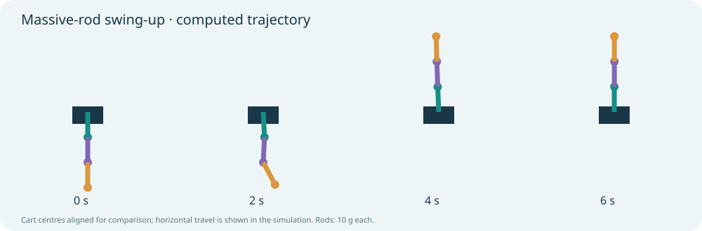

01 / Control systems · Simulation study
One cart. Three links. One control input.
From Lagrange equations to a verified nonlinear swing-up: exploring how a single cart force can raise and balance three passive links.
No installation needed. The demonstration opens in your browser using saved simulation results.

Settling time for the saved swing-up
Peak applied cart force
Maximum absolute cart displacement
How it works
Rigid-body dynamics derived with Lagrange equations include endpoint masses and three uniform rods of 10 g each. Linearisation and controllability analysis lead to Riccati-based LQR feedback. A constrained trajectory is planned from the hanging state, tracked, and independently replayed.
What to look for
Compare planned motion and feedback stabilisation. Inspect cart force, link angles and the transition to upright balancing. The report explains the mass matrix, state-space model, controllability and Riccati equation.
What this study establishes
A numerical study of an idealised model. Only the cart is motorised. Links are rigid and joints passive; sensing and actuation are ideal. Local LQR stability is not a global recovery guarantee. The massive-rod page replays saved simulations; mouse interaction is available in the separate original massless model.
Further reading
Near-upright experiments · Interactive massless model
Next questions
Test parameter uncertainty, disturbances, sensing noise and delays; compare trajectory tracking with online replanning and energy-based approaches.